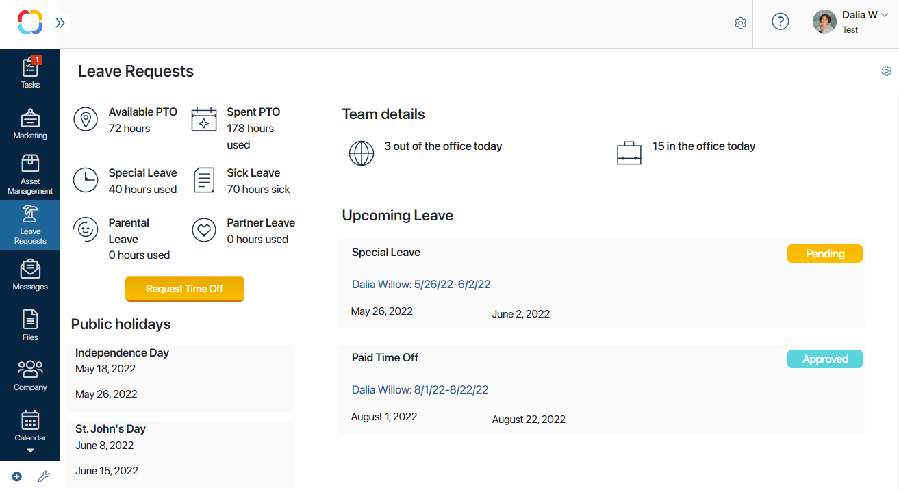
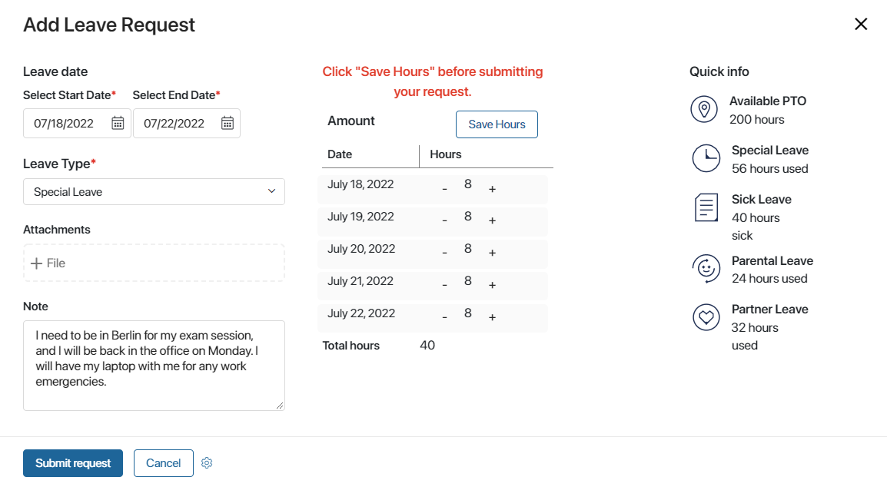

The Leave Management solution is designed to automate leave requests and approvals, PTO calculation, and scheduling.
Leave requests submitted by employees are automatically routed to the right approvers, saving time and effort. Approved leaves are added to the schedule, helping employees prioritize their tasks accordingly. Employees can easily track how much paid time off they have left right in the app without having to email the HR.
The solution includes the following preset apps and processes:
App |
Business processes in the app |
Welcome page |
No business processes. General description. |
My Leave Requests page |
A page showing the number of used sick days, remaining vacations days, available PTO of the current user. Features a button for launching the Leave Request process. |
My Leave Schedule app |
A calendar app that shows all the scheduled days off of the current user. No business processes. |
Leave Requests app |
An app that stores all the leave requests made by employees and displays them by status. Associated process: Leave Request. |
Employees app |
No business processes. A database of employees with a leave request approver and PTO specified for each employee. |
Public Holidays app |
No business processes. A catalog of Public Holidays with non-working days. |
Company Settings app |
No business processes. Settings regarding working days, hours, and PTO. |
Initial setup of the solution
- Import the solution from the BRIX Store catalog or upload the .e365 file to the system.
- During the import, you will be prompted to select users for each role configured in the workspace. If you didn’t do it right away, you can do it later: click the gear icon next to the workspace’s name and select Groups. Here you can set up the roles and assign them to user. Make sure to do it before starting to use the solution. The Leave Management workspace has two preset roles:
- Approver is the person who approves leave requests. This role is specified in the approval workflow, so if you want people to receive approval tasks, make sure to add them to this role;
- Administrator has access to all the app settings.
- Fill up the Employees app. Here, for each employee you have to specify the approver and the total amount of paid time off available. It is set in hours and may depend on your company's policies, legislation, position, etc.
- Fill up the Public Holidays app. Add appropriate holidays, enter the names and the non-working periods. In a leave request, these days are automatically calculated as days off and not included in the total number of hours of the leave.
- Manage Company Settings. Here you can change the PTO, which is by default set to 300 hours; select the workdays and weekends; enter the number of working hours per day.
Working with leave requests
Go to the My Leave Requests page. It shows detailed information about leaves and holidays:

- How much paid time off you have left and how many leave hours you have used per type of leave: sick, parental, partner, and special leave.
- How many of your co-workers are on leave today.
- What public holidays are coming up
- What is the status of your upcoming leaves.
Submit a leave request
You can submit a new leave request right on the My Leave Requests page. To do that, click the yellow Request Time Off button.
A request form opens, showing the amount of available PTO and used time off for the current employee. Fill it out:

- Specify the end and start dates. The number of hours for each day will be specified automatically taking into account the public holiday and company settings. By default, there are 8 hours in each business day. For weekends and public holidays this number is set to 0. You can edit the number of hours in each row, for example, if you only need half a day off. Click Save Hours in order to save the total amount of your requested time off.
- Select a leave type. You can select from Special leave, Partner leave, Paid time off, Parental leave, Sick leave.
- Attach a file if necessary, for example, a certificate with expected date of birth for parental leave.
- Explain why you are taking the leave.
- Click Submit request.
The request is automatically routed to the approver, who reviews it and either approves or denies the leave. In any case, you will receive a notification. When the leave is approved, it is added to the My Leave Schedule calendar so that you can see in advance when you will not be in the office. This helps plan working activities and meetings.
Cancel a leave request
If you decide to cancel your leave, you can do so prior to its start date. To do that, find the request either on the My Leave Requests page or in the Leave Requests app. Open the request an click Cancel leave in the top right corner. The leave will be canceled. The system will notify the approver about it, change the request's status to Canceled and remove the leave from your schedule.
Found a typo? Select it and press Ctrl+Enter to send us feedback